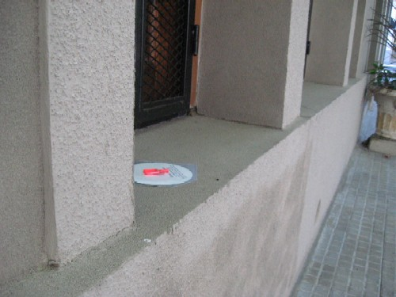
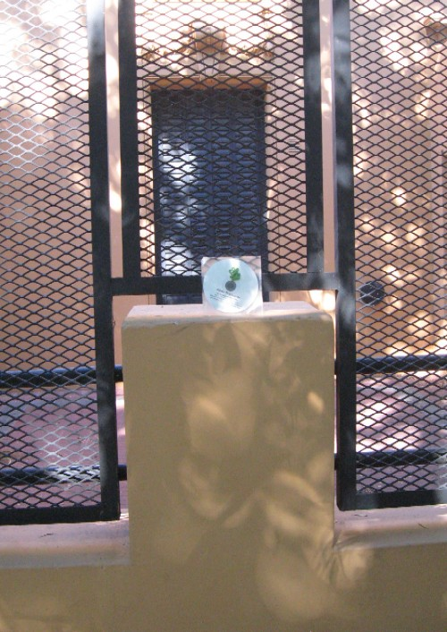
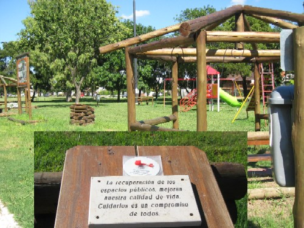
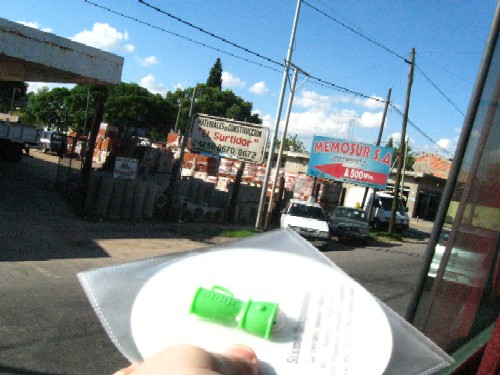

¿Pensaste que estábamos muertos? Jajaja, nada más alejado de la verdad. (?) El verano de 2010 fue lluvioso para La Plata y el sur del conurbano bonaerense: ¡llovieron ejemplares de Sismo Trapisonda!
Linda vista, ¿no?
Vas tranquilamente por la vereda y... ¡ooooOOOOohhhhh...!
Era muy, muy difícil resistir la tentación de dejar un ejemplar acá, ustedes comprenderán.
¡Qué linda placita! ¡Y qué linda revistita!

Un ejemplar de ST listo para ser arrojado sobre los desprevenidos transeúntes de Burzaco.
Repartimos varios números de esta manera por esa localidad, Claypole, Florencio Varela
y Quilmes, aunque, como se hace difícil documentar un reparto hecho de esta manera,
sólo tenemos esta foto. (Tendríamos que contratar topos en el GBA, también,
pero el sindicato es bastante duro en esa zona.)